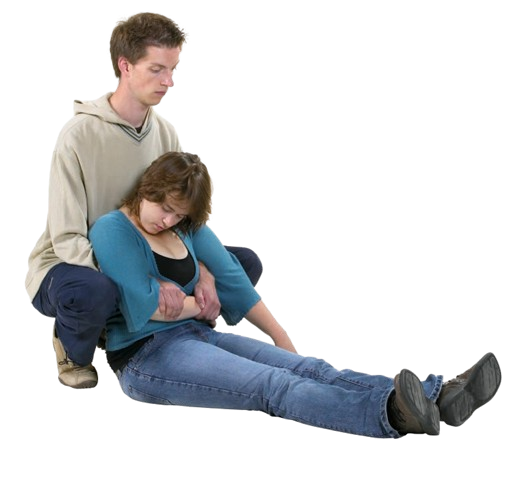

Pasul 5
Stai pe vine, fără a da drumul brațului victimei. Acum victima se află între picioarele tale depărtate. Aprasă bine brațul victimei pe pieptul acesteia.

Pasul 6
Ridică-te în picioare cu spatele drept și trage victima în sus, astfel încât aceasta să fie sprijinită de tine. Mergi cu spatele, trăgând victima după tine. Fii atent la obstacolele care s-ar putea afla în spatele tău.